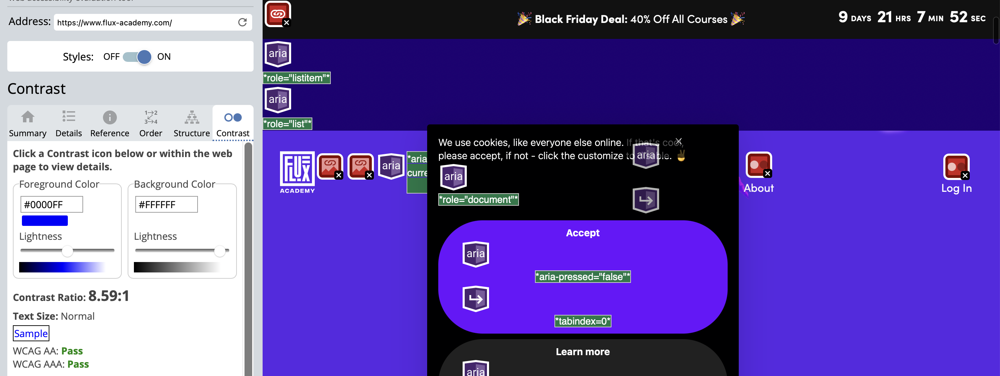
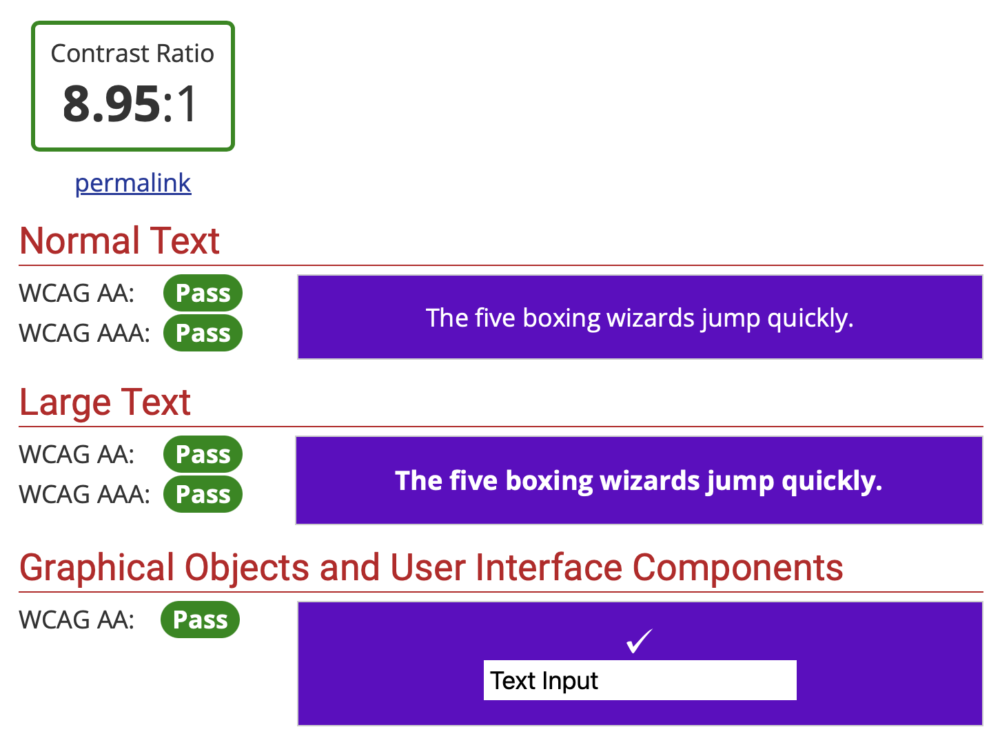
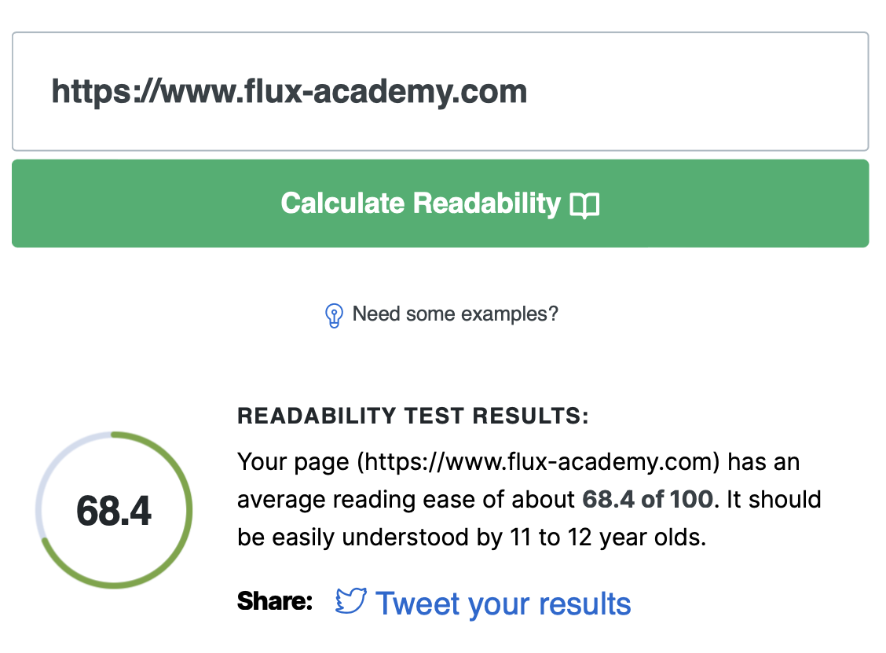

WAVE Web Accessibility Evaluation Tool: “The tool will analyse the website and provide a report highlighting various accessibility and WCAG errors, as well as areas that may need human evaluation” (Wave, 2023). After entering the Flux Academy website into the WAVE tool, I got the following results: Overall, 12 errors in total including 2 X Linked images missing alternative text, 4 X Missing form labels, 1 X Language missing or invalid, 4 X Empty link, 6 Contrast Errors. These errors are not critical since most are missed links, and I believe that these errors occur because the website is built in WebFlow, the contrast errors are not accurate, because they are found in the nav bar, which changes its colour based on the background. Hence, contrast has been taken into consideration when building the website. Another proof is that the overall contrast ratio is classified as 8.59:1, and the text size is normal. With that, the website passes both WCAG AA, and WCAG AAA.
WebAIM Contrast Checker: As mentioned in the previous task the website meets WCAG 2.0 or WCAG 2.1 standards for text and graphical objects. Another way of checking these is by using the Figma plug-in. In fact, I have been using this tool for building my website until week 10. Here is a contrast ratio check of my website's buttons.
Readability Test Tool: The tool assesses the text using various readability indicators such as the Flesch Kincaid Reading Ease, Gunning Fog Score, and others and provides scores that indicate how easy the text is to understand. “The page (https://www.flux-academy.com) has an average reading ease of about 68.4 of 100. It should be easily understood by 11 to 12-year-olds”. The website scored pretty high results in the readability test, which is something I am trying to achieve with my website as well.
I have read the information provided.
Following the instructions, I have created and implemented a webVTT file; however, when playing the video the captions do not play. I am working on fixing that issue.
As I mentioned during the IL tasks, although my coding skills are quite limited, am trying to make my website as accessible as possible. To achieve this, I am creating alt-tags, alternative text describing the appearance or function of an image on a page. I am adding these within the HTML code. What is more, I am checking the contrast ratio of each text, for example, you saw the screenshot of the button check (IL tasks week 10), and people with hearing impairments will be getting captions for the video tutorials. I am still working on the implementation of these.